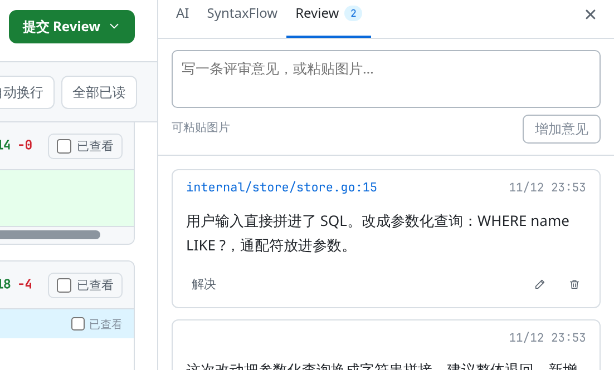

Reference
Intentflow docs
Install, pick a range, review, export.
1. Start
Run it in the repo you want to review. It opens the browser.
shell
cd /path/to/your/repo
intentflow --base main
intentflow --no-open --base main2. Pick a range
Common ranges
| Command | Meaning |
|---|---|
intentflow --base main | main to HEAD |
intentflow --base main --head WORKTREE | main to the worktree, with untracked files |
intentflow --base v1.0 --head HEAD | tag or commit range |
intentflow --before ./a --after ./b | two directories, no Git |
Flags
| Flag | Meaning |
|---|---|
-t, --target | repo directory, default `.` |
--base | baseline; nearest of main, master, origin/main, origin/master |
--head | end point, default `HEAD`; `WORKTREE` adds uncommitted files |
--before, --after | two directories instead of a Git range |
--host | listen address, default `0.0.0.0` |
--port | port; `0` picks a free one |
--out | where `intentflow diff` writes `review.json` |
--dist | override the embedded frontend, debug only |
--no-open | do not open the browser |
-v | print progress |
With no `--base` it takes the nearest ancestor and never falls back to `HEAD~1`.
3. Review
Comments and marks belong to this comparison, in the browser.

- Comment a line, or drag a range.
- `Ctrl`+`F` searches every file, with case and whole-word switches.
- A rename is one card: old path, arrow, new name.
Viewed marks
Keyed by file, row and content digest, so an edited hunk loses its mark.
- Marking a file marks its hunks.
- A viewed file greys out and collapses.
4. Symbols
Click an identifier to list every place it appears.
Scope: changed files of this comparison, both sides. No index, no language server.

How to use it
- Click a word to open the panel.
- Click a row to jump to that line.
- Whole word by default: `hit` does not match `hits`.
`$hit` returned 1457 rows in one comparison.
5. Export
Two rows: copy to the clipboard or save a file.
- Markdown: path, side, line, quoted code.
- JSON: the full document.
- `Ctrl`+`Enter` copies Markdown without the menu.
review.md
## Review
### 1. internal/store/store.go · R15
> query = fmt.Sprintf("SELECT id FROM users WHERE name LIKE '%%%s%%'", name)
Concatenated SQL. Use a parameterised query.
### 2. Overall
Revert the string concatenation.6. Where reviews live
- Reviews: `localStorage`, key `intentflow.review.<comparison_id>`.
- Images: inline data URLs, up to 1.5MB each.
- Layout preferences: the same store, `intentflow.` prefix.
- The server writes no files.
7. Build
Go 1.24+, pnpm and git. `schema/openapi.yaml` generates both sides.
make
make tools # oapi-codegen and frontend deps, once
make schema # schema/openapi.yaml -> Go and TypeScript types
make check # go vet, Go tests, tsc, Vitest
make build # frontend build and static binary
make release-check # cross-compile the six release targetsNo binary yet? Run `./scripts/build.sh`. Site: `make site`, port 8131.
8. Design documents
docs/00-thesis.md— code cannot express intentdocs/02-layers.md— the three layersdocs/05-frontend.md— workbench layoutdocs/07-behavior-model.md— behaviour viewdocs/08-contract.md— one schema, both languagesdocs/10-release.md— artifacts and checksums